Inter3Lab Poltava
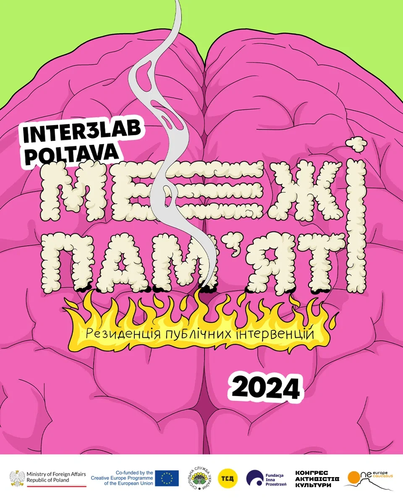
Inter3Lab Poltava — міжнародна мистецька резиденція публічних інтервенцій, що перетворила міський простір Полтави на відкриту платформу для сучасного мистецтва, дослідження пам'яті та взаємодії між міжнародними митцями й локальною спільнотою.
Полтавська резиденція відбулася в межах міжнародної програми One Europe One Caucasus II / Inter3Labs. Її локальна назва — «Межі пам'яті» — окреслила головний напрям роботи: дослідження того, як місто зберігає, змінює та переосмислює власні історії, культурні й історичні наративи.
Бібліотечна локація
- Рік
- 2024
- Локація
- Полтавська обласна універсальна наукова бібліотека ім. І. П. Котляревського — одна з п'яти локацій проєкту
- Кураторство
- Роксолана Дудка (разом із Вітеком Хебановським); менеджерка — Наталя Баранник
- Партнери
- ГО «Конгрес активістів культури», The Other Space Foundation; співфінансування — «Креативна Європа» та МЗС Польщі («Публічна дипломатія 2024»)
Маршрут бібліотекою · фото
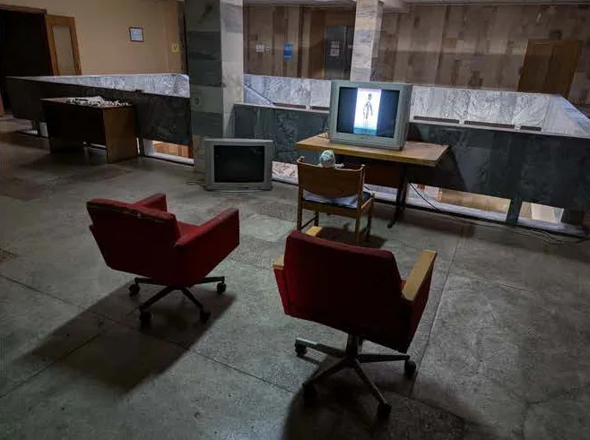
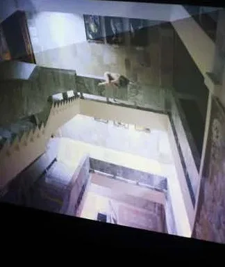
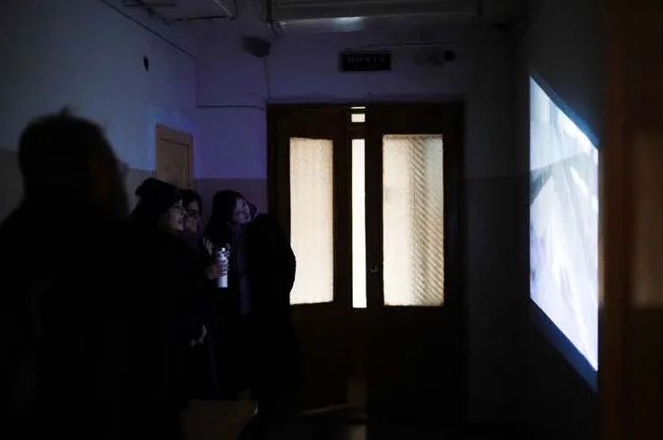
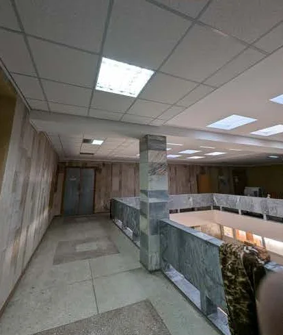
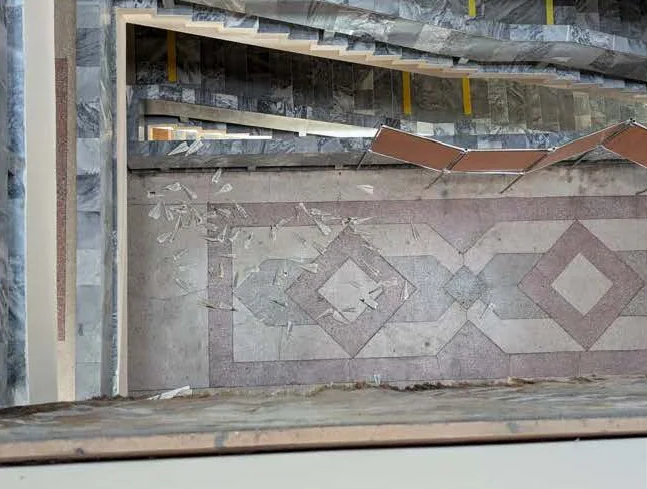
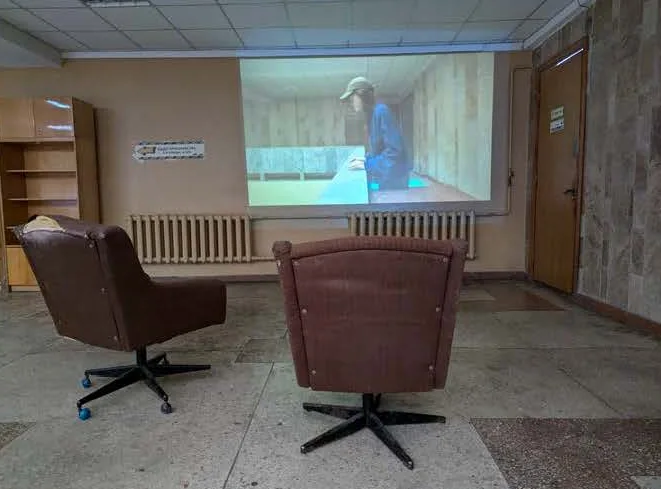
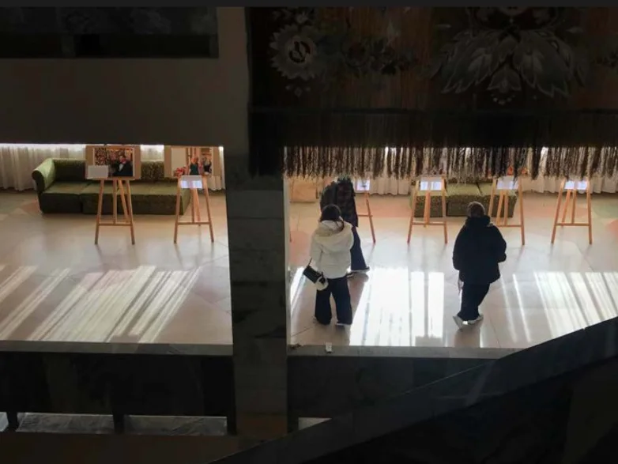
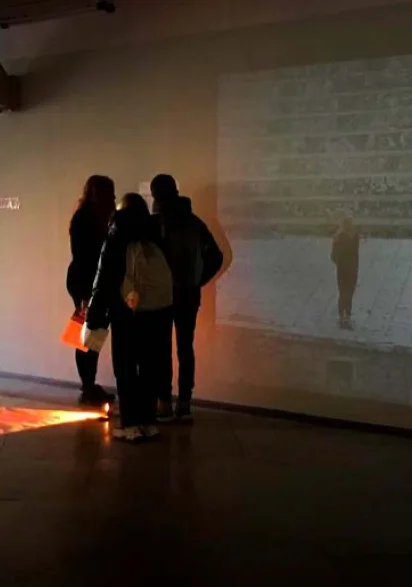
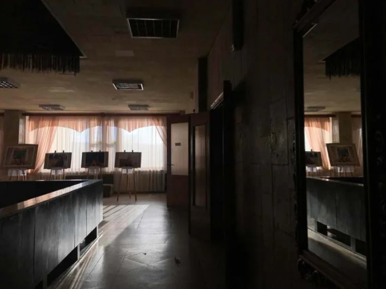
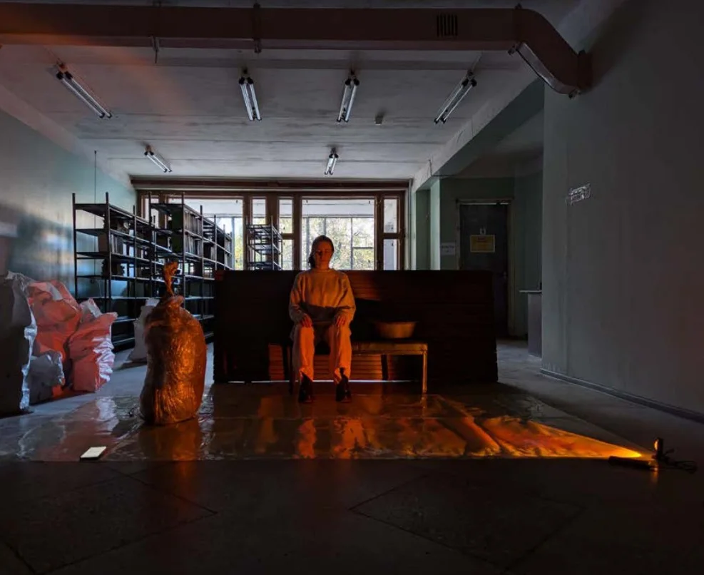
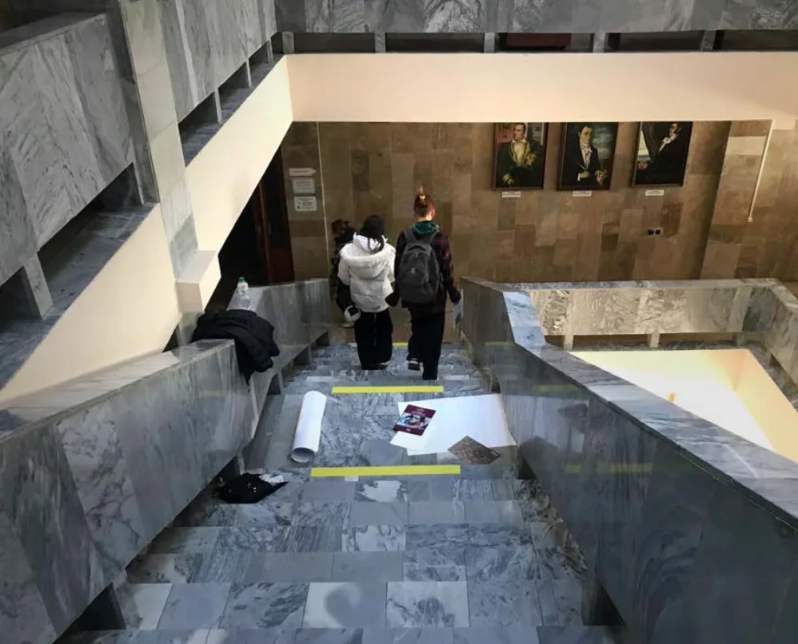
Відео · Inter3Lab Poltava
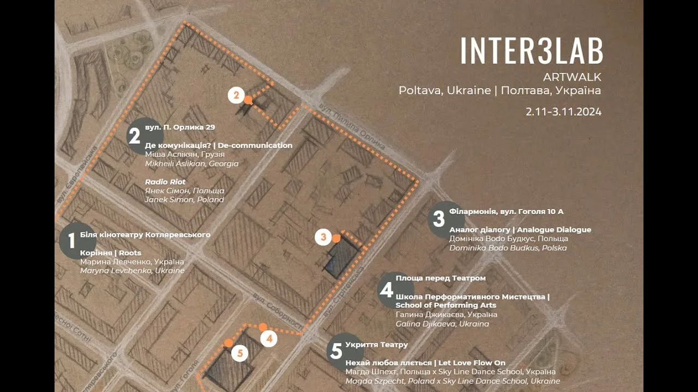
Inter3Lab Poltava — відеоYouTube ↗За 2 дні презентації в бібліотеці
Концепція та підхід
Inter3Lab запропонував модель мистецької роботи, у якій місто ставало не просто місцем проведення подій, а безпосереднім матеріалом для художнього дослідження.
Митці працювали з конкретними локаціями, їхньою історією, архітектурою, функціями та пам'яттю мешканців. Важливими темами стали декомунізація, деколонізація, переосмислення міської спадщини та дослідження суперечливих сторінок історії Полтави.
Замість демонстрації заздалегідь створених робіт резиденція передбачала занурення в локальний контекст: знайомство з містом, спілкування з людьми, дослідження просторів і створення мистецьких інтервенцій у безпосередньому зв'язку з місцем.
Місто як виставковий простір
Проєкт не обмежувався галереєю чи культурною інституцією. Виставковим простором стала сама Полтава: вулиці, площі, двори, громадські будівлі та колишні культурні простори.
У межах полтавської програми було реалізовано 24 окремі мистецькі проєкти. Художники працювали з інсталяцією, перформансом, театром, танцем, фотографією, аудіовізуальним мистецтвом, архітектурою та партисипативними практиками.
У листопаді 2024 року відбулася публічна артпрогулянка, що об'єднала мистецькі інтервенції, виставки, театральні виступи та екскурсії. Участь у полтавській програмі взяли митці з України та Грузії.
Так міський маршрут перетворився на простір знайомства з різними художніми висловлюваннями, а мешканці отримали можливість взаємодіяти з мистецтвом безпосередньо у звичному міському середовищі.
Роль ГО «Креативна область Мислення»
Команда ГО «Креативна область Мислення» долучилася до локальної організаційної та логістичної підтримки Inter3Lab у Полтаві. Організація сприяла комунікації, взаємодії з локальним контекстом, роботі з локаціями та практичній координації процесів під час реалізації мистецької програми. На бібліотечній локації резиденції команда ГО «КОМ» відповідала за кураторство та адміністрування.
Таким чином, участь ГО відбувалася на рівні локального культурного посередництва та організаційного забезпечення міжнародного мистецького процесу.
Представниця організації Роксолана Дудка поєднала кураторську роботу з власною мистецькою практикою в межах резиденції.
Міжнародна співпраця
Inter3Lab став прикладом взаємодії міжнародної мистецької програми з конкретним міським середовищем. Художники з різних країн працювали з локальною історією Полтави, вступали в діалог із мешканцями та створювали роботи, що виникали безпосередньо з дослідження міста.
Проєкт реалізовувався в межах програми One Europe One Caucasus II за підтримки Міністерства закордонних справ Польщі в межах програми Public Diplomacy 2024 та Creative Europe.
Для ГО «Креативна область Мислення» ця співпраця стала важливим досвідом роботи з міжнародними культурними процесами, міждисциплінарними командами та локальним мистецьким середовищем.
Значення для міста та подальшої роботи
Inter3Lab продемонстрував, що міська історія, архітектура, публічні простори та особисті спогади мешканців можуть ставати повноцінним матеріалом для сучасного мистецтва. Проєкт відкрив можливість інакше подивитися на звичні міські локації, поставити питання про пам'ять і спадщину та залучити мешканців до взаємодії з актуальними мистецькими практиками.
Для ГО цей досвід став одним із важливих етапів розвитку компетенцій у сфері кураторства, локальної координації, міжнародної комунікації та роботи з публічним простором.
Inter3Lab Poltava — досвід, у якому міжнародне мистецтво зустрілося з локальною пам'яттю, а саме місто стало простором для нового прочитання власної історії.
Інші проєкти ГО «Креативна область мислення»